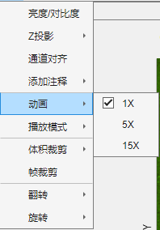
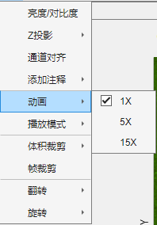

1.2.5 动画
 动画用于控制浏览器自动播放速度，播放倍速为相对相机倍速。例如相机实际拍摄帧率为1 FPS，25倍速即为 25 FPS。 注：播放速度为理论播放速度，实际播放速度受硬件与MATLAB渲染器的限制。

动画用于控制浏览器自动播放速度，播放倍速为相对相机倍速。例如相机实际拍摄帧率为1 FPS，25倍速即为 25 FPS。
注：播放速度为理论播放速度，实际播放速度受硬件与MATLAB渲染器的限制。